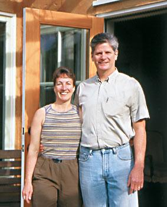
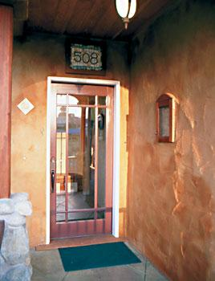
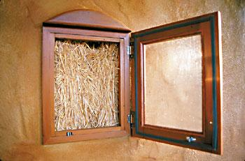
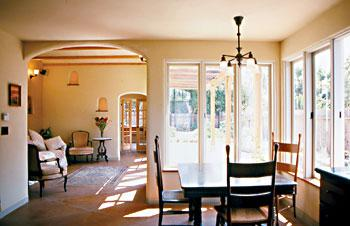
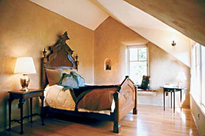
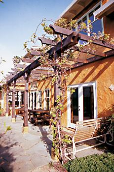

Straw Bale, Solar Home In The City
This solar-powered green dream home presents a shining example of what every new house can be.
By Catherine Wanek
June/July 2005
On a narrow lot in Capitola, Calif., stands a modest and inviting craftsman-style home. This not-so-big house fits into the quiet neighborhood, yet it is anything but ordinary. Its energy-efficient design features and solar technologies make this home a cutting-edge model of sustainability.
Stroll by this attractive house and the gleam of a rooftop photovoltaic (PV) solar system and solar hot-water collector will catch your eye. These systems, combined with passive solar design and superinsulated walls and ceilings, translate to rock-bottom energy bills. The home’s 2004 average monthly energy bill from Pacific Gas and Electric Co. (which includes natural gas use and numerous administrative fees) was just $13.22. According to the company, the average monthly energy bill for customers in the same area is $83.
Homeowners Mark and Kristin Sullivan took full advantage of California’s renewable energy incentives - namely net metering and generous rebates for grid-tied solar electric systems. The Sullivans paid $11,563 for their PV system, but after state rebates and tax credits, the net cost was reduced to $6,710. And because the house is grid-tied, the Sullivans did not need to buy costly batteries - the grid essentially functions as their backup power source.
Passive Solar, Active Owners
The home’s primary means of saving energy is its passive solar design - specifically the concepts of “orientation, insulation, glass and mass.” By orienting the main living areas of the house to the south, the low winter sun shines in and its heat is absorbed by the thermal mass of the floors and wall plasters. In the summer, roof overhangs and deciduous vines block sunlight from entering the house. The home’s airtight straw bale walls and recycled cellulose insulation create a building envelope that helps the thermal mass retain heat or coolness, which releases over time, keeping the house at a comfortable temperature.
Passive solar design requires active owners - people who understand when to open and close windows and curtains for maximum comfort and energy conservation - and the Sullivans are prime examples. “When you live in a home that’s run by nature, you’re constantly aware of what is going on outside,” Kristin says.
Mark and Kristin enjoy savings from energy-efficient appliances such as their clothes washer, dishwasher, stove and refrigerator. What’s more, all their lighting fixtures have efficient compact fluorescent bulbs. Their entertainment appliances are plugged into power strips, so they can be completely turned off when not in use. This eliminates the “phantom loads” created by devices with remote controls and constant displays (such as a digital clock) even when they are turned “off.” And instead of buying a clothes dryer, the Sullivans installed a retractable clothesline in the back yard. “Honestly, hanging laundry is fun, and it gives me an excuse to be outdoors,” Kristin says.
Building a Dream with Bales
When Mark and Kristin met in 1983, they both dreamed of having a solar homestead in the country. But when the time came to build, they were quite happy in the city. They decided to look for a lot in Capitola, a quiet beach community near Santa Cruz, where they could walk to restaurants and bicycle to the grocery store. “It’s energy-efficient to live close by the amenities you need,” Kristin says. “We wanted to build in the city to show that you can bring sustainability there.”
After searching for nearly two years, the Sullivans finally found their prize - a run-down bungalow on a narrow lot just blocks from the beach. The existing cottage was taken down, and the materials were set aside to be used for the new house.
Initially, the Sullivans were hesitant about straw bales - they had been told that bales are too bulky for urban building. They also had other common concerns about straw bale building - fire, bugs, mold and earthquakes. But after investigating their questions, they said, “Why not?”
“With all my initial skepticism about straw bale, I never thought I would become a proponent of it,” Mark says. “But straw bales covered with earthen plaster make a wonderful natural interior space.”
They interviewed five architects with straw bale experience and eventually chose Kelly Lerner of One World Design. For the general contractor, the Sullivans chose Boa Constructor Building and Design, consisting of Michele Landegger and Debrae Lopes. The Sullivans also employed longtime friend Frank Schiavo to design their solar system.
Lerner asked the Sullivans to fill out a questionnaire before she began the design and floor plan. Then Lerner, Landegger and Lopes worked with the Sullivans to refine the two-bedroom, two-bath, two-story floor plan and the craftsman exterior.
Even though straw bales were not in Capitola’s building codes, the local officials were immediately receptive to the proposal, Mark says. The Sullivans had a structural engineer evaluate the home’s design; they also gave the city officials the state of California’s model for straw-bale building codes. After that, the Sullivans were approved and on their way to building Capitola’s first straw bale home.
By siting the house along the north side of the 45-by-100-foot lot, all the living space is oriented to the south, for maximum daylight and solar heat in the winter. To keep the scale of the home modest, they designed the line of the gabled roof to cascade back from a front porch, to a slightly higher first-floor roof, then to the taller second-floor roof.
Inside, the 1,460-square-foot home feels spacious, in large part due to the expanse of south- and east-facing windows that extend the view. Built-in design features such as arched doorways, a vaulted ceiling, nichos (recessed niches) and wall “see-throughs” add elegance without clutter. Everywhere there is a consciously efficient use of space.
Luscious earthen plasters adorn the interior bale walls, hand applied with natural clay from New Mexico. Ferrous sulfate, a benign and inexpensive agricultural fertilizer, was used to stain the exterior lime/cement stucco and cement floors. Other handcrafted details include built-in window seats, a recycled tile mosaic and the requisite “truth window” - a small, decorated hole in a wall that reveals a straw bale.
The 10-month construction process involved more than 200 friends, family members and subcontractors who joined the Sullivans’ straw bale and plastering parties. All the wood used in construction was salvaged or sustainably harvested.
The Sullivans’ landscape incorporates fruit trees and vegetables among other native California plants. Rainwater is collected off the roof and used to sustain the landscape. The front yard is a mix of native flowers, bunch grasses and low bushes that are drought-tolerant.
The Sullivans’ biggest challenge was balancing their ecological ideals with budgetary concerns. “We knew the result that we wanted, but the most challenging part was determining the best sustainable materials at each step along the way,” Mark says. “When building a house, you have to make a hundred decisions a day - it’s not cut and dried which choice is the best.”
At $200 per square foot, the Sullivans’ home was more expensive than conventionally built stick-frame houses. “The slightly higher price per square foot reflects the extra-careful design and small engineering details - we squeezed a lot of features onto a small urban lot,” Landegger says. “The PV and solar hot-water systems were reasonably priced, and the FSC-certified [Forest Stewardship Council] wood only added about 10 percent more to the wood cost. But when you build a smaller house, it will generally cost more per square foot than a larger home, with larger rooms. There is less material cost, but more labor cost relative to the finishing details.”
But the Sullivans regard their home as an investment rather than an expense. “It’s not just about the cost up front, but overall life-cycle costs, of which energy is the biggest piece in the average home,” Kristin says. “We couldn’t be happier with how the house turned out.” Mark concurs, “One of the first mornings I woke up in the house, I watched the different tones and shades of the wall as the sun moved across the sky. I’m still amazed and in awe of all that.”
Planting Seeds
Kristin teaches environmental studies at De Anza Community College in Cupertino, Calif., and her students visit the house to experience its eco-friendly features. Mark teaches the same subject there, but on a part-time basis; he works full time as an environmental engineer. The Sullivans also open their home to monthly tours. “We’re planting seeds,” Mark says. The Sullivans’ experience has made them local green building authorities. Kristin now is an environmental commissioner for Capitola, and she serves on several environmental committees at De Anza College.
The Sullivans walk their talk in other ways, too. When they need to, they hit the road in hybrid cars - Kristin drives a Honda Insight (about 60 miles per gallon), and Mark drives a Toyota Prius (about 50 mpg). They also buy their produce from a local all-organic farmer’s market and belong to a community-supported agriculture co-op in nearby Watsonville. “Part of being a leader is showing change is possible,” Kristin says. “It’s not about perfection; I tell my students it’s the things you do 90 percent of the time that matter.”
Kristin describes the semester’s final assignment for her students - a 10-year environmental action plan. “Some say ‘I want to build a passive solar straw bale home within 10 years.’ It gives you hope.”
Author and photographer Catherine Wanek has been at the forefront of the straw-bale building movement for more than a decade.
For a closer look at this home design, and to consider building something similar, check out our Solar in the City study plan.
 CATHERINE WANEK This solar-powered green dream home is a shining example of what every new house can be. |
 CATHERINE WANEK Kristin and Mark Sullivan. |
 CATHERINE WANEK The front door was a bargain find at a salvage yard. |
|
 CATHERINE WANEK The "truth" window reveals the straw bale secret behind the home of Krisin and Mark Sullivan. |
 CATHERINE WANEK The long, narrow plan of the home utilizes passive solar design. |
 CATHERINE WANEK Sunlight streams into the Sullivans' south-facing master bedroom. |
|
 CATHERINE WANEK Grapevines will grow fast to shade the patio during the summer months. |
|
|